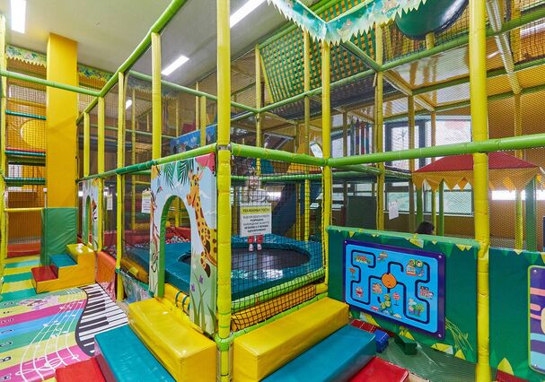

Детские развлекательные центры
Развлекательные торговые центры в Минске – отличный вариант совместить приятное с полезным. Если быть точнее, то это удобное место для шопинга и детского отдыха.
Пока взрослые неспешно гуляют по магазинам и выбирают нужные товары, дети весело проводят время, отдыхают и развлекаются в полной безопасности. Мы решили изучить все ТРЦ Минска и рассказываем, где есть интересные детские и игровые зоны. Топ-11 торгово-развлекательных центров Минска, где дети точно не будут скучать, пока родители ходят по магазинам.